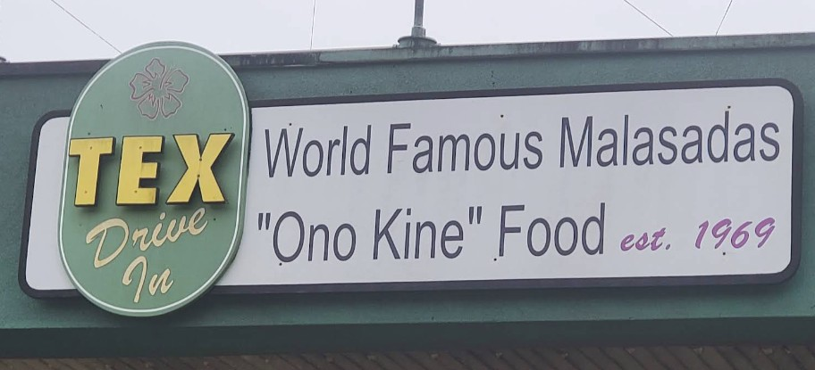

Tex Drive-In
Place: Tex Drive-In, Honokaʻa, Hawaiʻi Island
Type: Historic drive-in restaurant / roadside landmark
Namesake: Ernest “Tex” Texeira, a Hāmākua sugarcane grower who founded the restaurant with his wife Elizabeth in 1969
Story it tells: How a drive-in founded by a local sugarcane grower became a Hāmākua Coast landmark famous for its square malasadas and assorted fillings.

Tex Drive-In opened in Honokaʻa in 1969, founded by Ernest “Tex” Texeira and his wife Elizabeth. Born in nearby Kalopa, Ernest grew up along the Hāmākua Coast and worked as an independent sugarcane grower, cultivating his own land and selling cane to the local plantation mill. After traveling to the mainland and seeing the growing popularity of fast-food restaurants, the couple decided to bring the concept home. They opened a small drive-in along the highway through Honokaʻa, serving local residents and travelers.
Although Tex Drive-In offered a variety of local comfort foods, it became especially famous for its malasadas, the Portuguese-inspired fried dough pastries that had become a favorite throughout Hawaiʻi. Tex's developed a distinctive square-shaped malasada, served hot and coated in sugar, with fillings such as Bavarian crème, chocolate, and tropical fruit flavors (most notably mnago). Alongside the pastries, customers could order plate lunches, burgers, loco mocos, Portuguese bean soup, and other local favorites. The malasadas became the restaurant's signature attraction, turning a simple roadside stop into a destination of its own.
Tex Drive-In's growth was closely tied to the changing plantation landscape of Hāmākua. The restaurant originally operated from a smaller building across the street from its present location. In 1980, Texeira negotiated a land exchange with Theo. H. Davies & Co., owner of Hāmākua Sugar Company, trading agricultural cane land for a parcel near the highway in Honokaʻa. The exchange allowed him to develop the larger drive-in at its present site. As visitors traveled the Hāmākua Coast and local families returned for familiar meals, Tex Drive-In became an increasingly recognizable landmark, with its malasadas earning a reputation well beyond Honokaʻa.
After twenty-five years in business, Ernest and Elizabeth Texeira sold the restaurant to Ada Pulin-Lamme in 1994. Under later ownership, the business expanded and modernized, including a viewing window where customers could watch the malasadas being prepared. Duke and Shari Baldwin subsequently acquired the drive-in, continuing its tradition of square malasadas and local comfort food. Although the restaurant has changed hands, its original name hangs on the sign. More than half a century after opening, Tex Drive-In still carries the nickname of a Hāmākua sugarcane grower whose roadside restaurant became one of Hawaiʻi Island's best-known food stops.